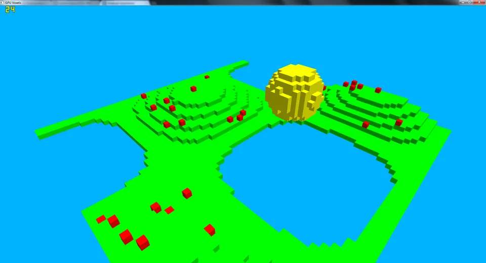
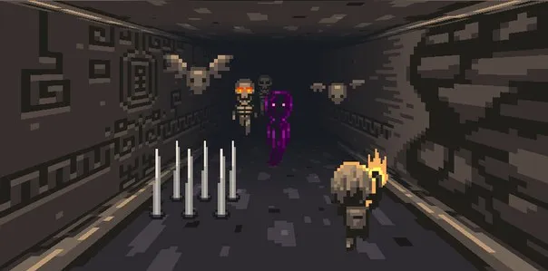

Barcelona, Spain
Mike Smahin
Senior Frontend / 3D Engineer
15+ years building software, with a focus on real-time 3D for the web and games. TypeScript, React, Three.js, WebGL & WebGPU, Unity / C#.
LinkedIn: linkedin.com/in/mike-smahin-48608226
- TypeScript
- React
- Three.js
- WebGL
- WebGPU
- Unity / C#
01 Featured demos
Live in the browser. Requires a WebGPU-capable browser (recent Chrome or Edge).
02 Selected graphics work
Earlier experiments in GPU rendering and simulation.

bubbles.js 2021
Thousands of bubbles drawn with GPU instancing in Three.js. Positions and velocities are simulated in GPGPU compute passes (fragment shaders over float textures).
View code →
GpuFluid 2014
2D fluid simulator on the GPU: advection, buoyancy, divergence and a Jacobi pressure solve, each as a shader pass. Add force and fluid with the mouse.
View code →
GpuRayTracer 2015
A ray tracer that runs in a fragment shader, with analytic ray–sphere, ray–plane and ray–cylinder intersections and point-light shading.
View code →
GpuVoxels 2015
A voxel world generated on the CPU, uploaded as a 3D texture and ray-marched per pixel in a GLSL fragment shader.
View code →
dungeon.js 2015
A 3D dungeon runner in the browser built on Three.js: normal-mapped sprite atlases, custom shaders, and a cast of bats, skeletons, ghosts, slimes and traps.
View code →03 Professional highlights
Vimeo · Venues
Owned the 3D component and simulation
Virtual conference platform: up to 10,000 avatars at a stable 60+ FPS on regular hardware.
Eneminds · Redungeon
Shipped a mobile game in Unity / C#
1M+ downloads per platform for Redungeon, built by a small team.
04 Advent of Code
Solved by hand, year after year, across five languages. Day counts are the days with a solution committed in each repo.
2025TypeScript
6 / 12 days
2024JavaScript
12 / 25 days
2023JavaScript
19 / 25 days
2022JavaScript
16 / 25 days
2021C#
25 / 25 days ★
2020Python
25 / 25 days ★
2019Ruby
25 / 25 days ★
2015C#
14 / 25 days
142 days of puzzles across 8 events · Ruby · Python · C# · JavaScript · TypeScript